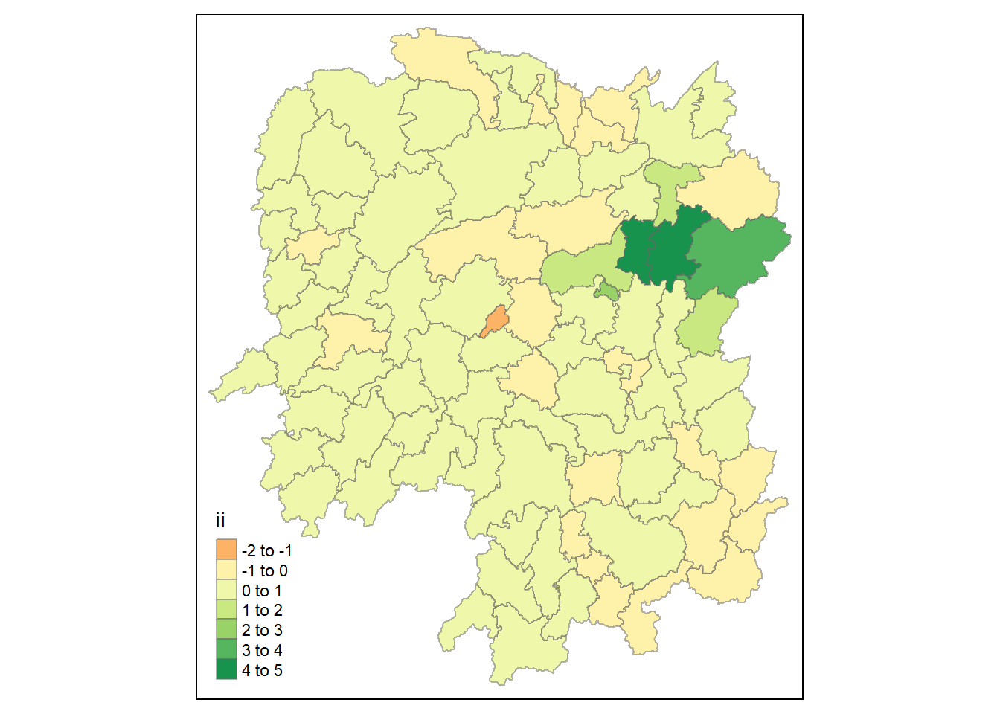
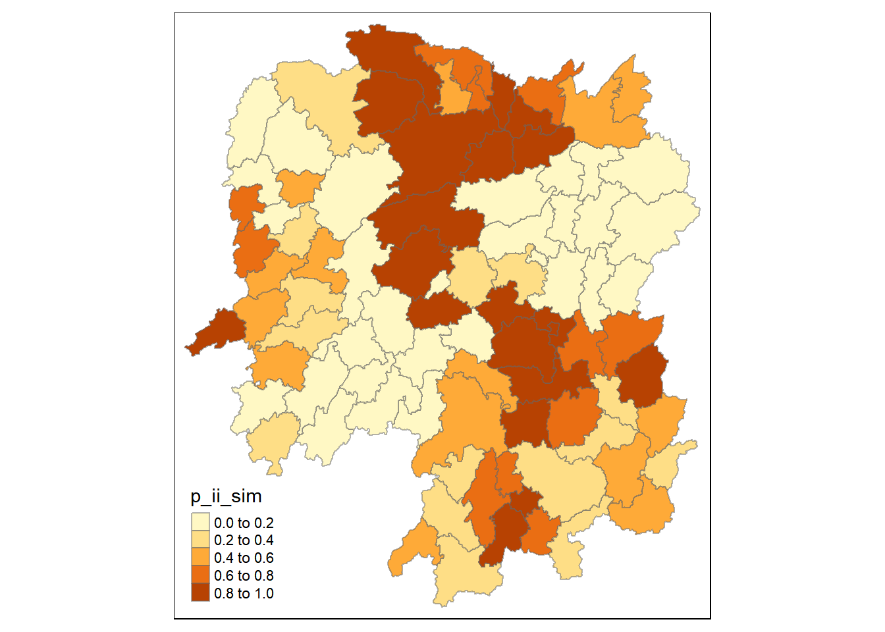
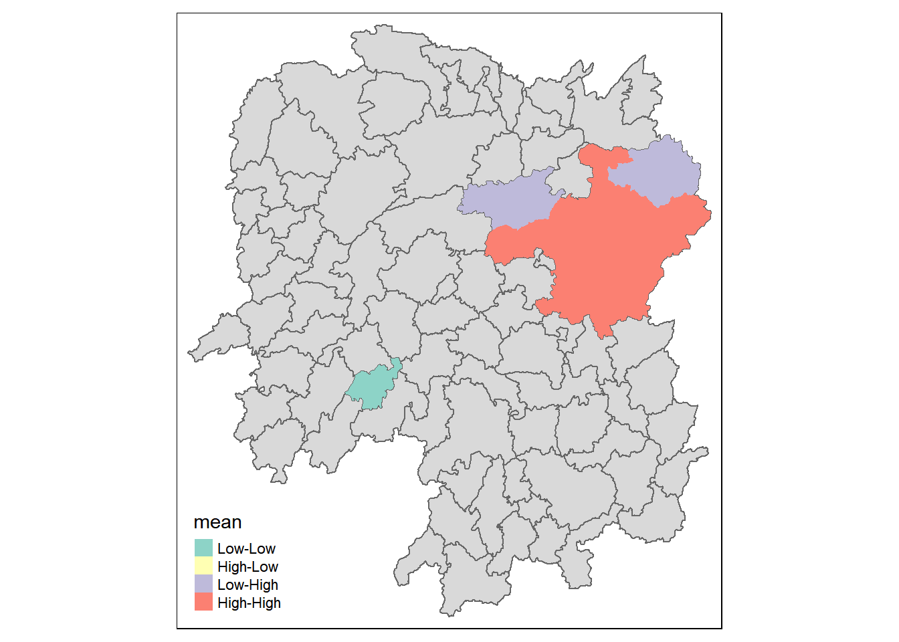
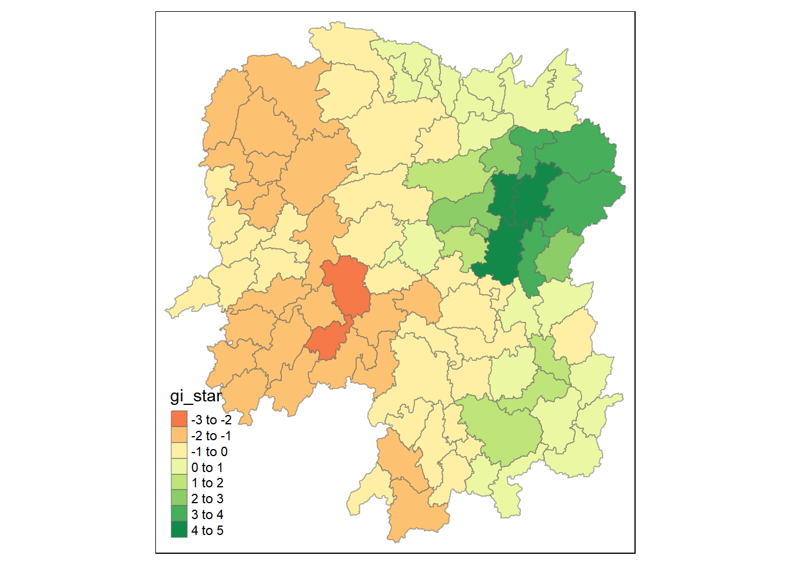
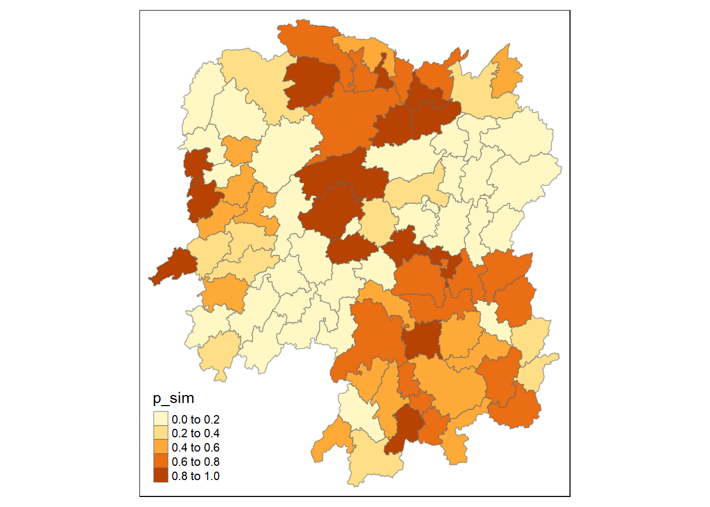

pacman::p_load(tidyverse, tmap, sf, sfdep, plotly)1 Getting Started
1.1 Installing and Loading Packages
Pacman assists us by helping us load R packages that we require, sf, sfdep, tidyverse, plotly and tmap.
Plotly helps to make our charts interactive.
1.2 Data Acquisition
The following datasets are used:
| Dataset Name | Source |
|---|---|
| Hunan (Hunan.shp) | Prof Kam |
| Hunan 2021 (Hunan-2021.csv) | Prof Kam |
2 Spatial Data Wrangling
2.1 Importing Spatial Data
We will use st_read() of sf package to import the three geospatial datasets.
hunan <- st_read(dsn = "In-Class_Ex07/data/geospatial", layer = "hunan")Reading layer `hunan' from data source
`C:\renjie-teo\IS415-GAA\exercises\In-Class_Ex07\data\geospatial'
using driver `ESRI Shapefile'
Simple feature collection with 88 features and 7 fields
Geometry type: POLYGON
Dimension: XY
Bounding box: xmin: 108.7831 ymin: 24.6342 xmax: 114.2544 ymax: 30.12812
Geodetic CRS: WGS 84hunan_2012 <- read_csv("In-Class_Ex07/data/aspatial/Hunan_2012.csv")Rows: 88 Columns: 29
── Column specification ────────────────────────────────────────────────────────
Delimiter: ","
chr (2): County, City
dbl (27): avg_wage, deposite, FAI, Gov_Rev, Gov_Exp, GDP, GDPPC, GIO, Loan, ...
ℹ Use `spec()` to retrieve the full column specification for this data.
ℹ Specify the column types or set `show_col_types = FALSE` to quiet this message.2.2 Combining both data frame by using left join
hunan_GDPPC <- left_join(hunan, hunan_2012) %>%
select(1:4, 7, 15)Joining with `by = join_by(County)`If two columns have the same name, they will automatically be joined, else, the following code has to be specified after the dataframes to be joined. A == B
3 Plotting a Chloropleth Map
tmap_mode("plot")tmap mode set to plottingtm_shape(hunan_GDPPC) +
tm_fill("GDPPC",
style = "quantile",
palette = "Blues",
title = "GDPPC") +
tm_layout(main.title = "Distribution of GDP per capita by district",
main.title.position = "center",
main.title.size = 1.2,
legend.height = 0.45,
legend.width = 0.35,
frame = TRUE) +
tm_borders(alpha = 0.5) +
tm_compass(type="8star", size = 2) +
tm_scale_bar() +
tm_grid(alpha = 0.2)
4 Identify Area Neighbours
Before a spatial weight matrix can be derived, the neighbours need to be identified first.
4.1 Contiguity Neighbours Methods
4.1.1 Queen’s Method
In the code chunk below st_contiguity() is used to derive a contiguity neighbour list by using Queen’s method.
nb_queen <- hunan_GDPPC %>%
mutate(nb = st_contiguity(geometry),
wt = st_weights(nb, style = "W"),
.before = 1)The code chunk below prints the neighbours found using the Queen’s method:
summary(nb_queen)Neighbour list object:
Number of regions: 88
Number of nonzero links: 448
Percentage nonzero weights: 5.785124
Average number of links: 5.090909
Link number distribution:
1 2 3 4 5 6 7 8 9 11
2 2 12 16 24 14 11 4 2 1
2 least connected regions:
30 65 with 1 link
1 most connected region:
85 with 11 links nb wt.Length wt.Class wt.Mode NAME_2 ID_3
NULL:NULL 5 -none- numeric Length:88 Min. :21098
5 -none- numeric Class :character 1st Qu.:21125
4 -none- numeric Mode :character Median :21150
4 -none- numeric Mean :21150
4 -none- numeric 3rd Qu.:21174
5 -none- numeric Max. :21201
4 -none- numeric
7 -none- numeric
6 -none- numeric
8 -none- numeric
3 -none- numeric
5 -none- numeric
4 -none- numeric
3 -none- numeric
4 -none- numeric
5 -none- numeric
7 -none- numeric
5 -none- numeric
6 -none- numeric
7 -none- numeric
5 -none- numeric
5 -none- numeric
7 -none- numeric
5 -none- numeric
5 -none- numeric
4 -none- numeric
3 -none- numeric
5 -none- numeric
3 -none- numeric
1 -none- numeric
8 -none- numeric
8 -none- numeric
5 -none- numeric
3 -none- numeric
6 -none- numeric
6 -none- numeric
4 -none- numeric
4 -none- numeric
5 -none- numeric
6 -none- numeric
6 -none- numeric
7 -none- numeric
6 -none- numeric
4 -none- numeric
6 -none- numeric
3 -none- numeric
5 -none- numeric
5 -none- numeric
4 -none- numeric
5 -none- numeric
3 -none- numeric
5 -none- numeric
3 -none- numeric
6 -none- numeric
5 -none- numeric
7 -none- numeric
6 -none- numeric
5 -none- numeric
4 -none- numeric
4 -none- numeric
7 -none- numeric
3 -none- numeric
4 -none- numeric
2 -none- numeric
1 -none- numeric
5 -none- numeric
4 -none- numeric
5 -none- numeric
3 -none- numeric
3 -none- numeric
3 -none- numeric
5 -none- numeric
5 -none- numeric
6 -none- numeric
6 -none- numeric
7 -none- numeric
7 -none- numeric
7 -none- numeric
7 -none- numeric
8 -none- numeric
6 -none- numeric
5 -none- numeric
9 -none- numeric
6 -none- numeric
11 -none- numeric
9 -none- numeric
4 -none- numeric
2 -none- numeric
NAME_3 ENGTYPE_3 County GDPPC
Length:88 Length:88 Length:88 Min. : 8497
Class :character Class :character Class :character 1st Qu.:14566
Mode :character Mode :character Mode :character Median :20433
Mean :24405
3rd Qu.:27224
Max. :88656
geometry
POLYGON :88
epsg:4326 : 0
+proj=long...: 0
5 Computing Contiguity Weights
5.1 Contiguity Weights: Queen’s Method
wm_q <- hunan_GDPPC %>%
mutate(nb = st_contiguity(geometry),
wt = st_weights(nb),
.before = 1)wm_qSimple feature collection with 88 features and 8 fields
Geometry type: POLYGON
Dimension: XY
Bounding box: xmin: 108.7831 ymin: 24.6342 xmax: 114.2544 ymax: 30.12812
Geodetic CRS: WGS 84
First 10 features:
nb
1 2, 3, 4, 57, 85
2 1, 57, 58, 78, 85
3 1, 4, 5, 85
4 1, 3, 5, 6
5 3, 4, 6, 85
6 4, 5, 69, 75, 85
7 67, 71, 74, 84
8 9, 46, 47, 56, 78, 80, 86
9 8, 66, 68, 78, 84, 86
10 16, 17, 19, 20, 22, 70, 72, 73
wt
1 0.2, 0.2, 0.2, 0.2, 0.2
2 0.2, 0.2, 0.2, 0.2, 0.2
3 0.25, 0.25, 0.25, 0.25
4 0.25, 0.25, 0.25, 0.25
5 0.25, 0.25, 0.25, 0.25
6 0.2, 0.2, 0.2, 0.2, 0.2
7 0.25, 0.25, 0.25, 0.25
8 0.1428571, 0.1428571, 0.1428571, 0.1428571, 0.1428571, 0.1428571, 0.1428571
9 0.1666667, 0.1666667, 0.1666667, 0.1666667, 0.1666667, 0.1666667
10 0.125, 0.125, 0.125, 0.125, 0.125, 0.125, 0.125, 0.125
NAME_2 ID_3 NAME_3 ENGTYPE_3 County GDPPC
1 Changde 21098 Anxiang County Anxiang 23667
2 Changde 21100 Hanshou County Hanshou 20981
3 Changde 21101 Jinshi County City Jinshi 34592
4 Changde 21102 Li County Li 24473
5 Changde 21103 Linli County Linli 25554
6 Changde 21104 Shimen County Shimen 27137
7 Changsha 21109 Liuyang County City Liuyang 63118
8 Changsha 21110 Ningxiang County Ningxiang 62202
9 Changsha 21111 Wangcheng County Wangcheng 70666
10 Chenzhou 21112 Anren County Anren 12761
geometry
1 POLYGON ((112.0625 29.75523...
2 POLYGON ((112.2288 29.11684...
3 POLYGON ((111.8927 29.6013,...
4 POLYGON ((111.3731 29.94649...
5 POLYGON ((111.6324 29.76288...
6 POLYGON ((110.8825 30.11675...
7 POLYGON ((113.9905 28.5682,...
8 POLYGON ((112.7181 28.38299...
9 POLYGON ((112.7914 28.52688...
10 POLYGON ((113.1757 26.82734...5.2 Contiguity Weights: Rook’s Method
wm_r <- hunan_GDPPC %>%
mutate(nb = st_contiguity(geometry, queen = FALSE),
wt = st_weights(nb),
.before = 1)wm_rSimple feature collection with 88 features and 8 fields
Geometry type: POLYGON
Dimension: XY
Bounding box: xmin: 108.7831 ymin: 24.6342 xmax: 114.2544 ymax: 30.12812
Geodetic CRS: WGS 84
First 10 features:
nb
1 3, 4, 57, 85
2 57, 58, 78, 85
3 1, 4, 5, 85
4 1, 3, 5, 6
5 3, 4, 6, 85
6 4, 5, 69, 75, 85
7 67, 71, 74, 84
8 9, 46, 47, 56, 78, 80, 86
9 8, 66, 68, 78, 84, 86
10 16, 19, 20, 22, 70, 72, 73
wt
1 0.25, 0.25, 0.25, 0.25
2 0.25, 0.25, 0.25, 0.25
3 0.25, 0.25, 0.25, 0.25
4 0.25, 0.25, 0.25, 0.25
5 0.25, 0.25, 0.25, 0.25
6 0.2, 0.2, 0.2, 0.2, 0.2
7 0.25, 0.25, 0.25, 0.25
8 0.1428571, 0.1428571, 0.1428571, 0.1428571, 0.1428571, 0.1428571, 0.1428571
9 0.1666667, 0.1666667, 0.1666667, 0.1666667, 0.1666667, 0.1666667
10 0.1428571, 0.1428571, 0.1428571, 0.1428571, 0.1428571, 0.1428571, 0.1428571
NAME_2 ID_3 NAME_3 ENGTYPE_3 County GDPPC
1 Changde 21098 Anxiang County Anxiang 23667
2 Changde 21100 Hanshou County Hanshou 20981
3 Changde 21101 Jinshi County City Jinshi 34592
4 Changde 21102 Li County Li 24473
5 Changde 21103 Linli County Linli 25554
6 Changde 21104 Shimen County Shimen 27137
7 Changsha 21109 Liuyang County City Liuyang 63118
8 Changsha 21110 Ningxiang County Ningxiang 62202
9 Changsha 21111 Wangcheng County Wangcheng 70666
10 Chenzhou 21112 Anren County Anren 12761
geometry
1 POLYGON ((112.0625 29.75523...
2 POLYGON ((112.2288 29.11684...
3 POLYGON ((111.8927 29.6013,...
4 POLYGON ((111.3731 29.94649...
5 POLYGON ((111.6324 29.76288...
6 POLYGON ((110.8825 30.11675...
7 POLYGON ((113.9905 28.5682,...
8 POLYGON ((112.7181 28.38299...
9 POLYGON ((112.7914 28.52688...
10 POLYGON ((113.1757 26.82734...6 Global Moran I
6.1 Performing Global Moran’s I Test
moranI <- global_moran(wm_q$GDPPC,
wm_q$nb,
wm_q$wt)
Note
Typically global_moran test is not run, we can just run the global_moran_test as shown below
Performing Global Moran I Test
global_moran_test(wm_q$GDPPC,
wm_q$nb,
wm_q$wt)
Moran I test under randomisation
data: x
weights: listw
Moran I statistic standard deviate = 4.7351, p-value = 1.095e-06
alternative hypothesis: greater
sample estimates:
Moran I statistic Expectation Variance
0.300749970 -0.011494253 0.004348351 Since p-value < 0.05, we reject the null hypothesis. We observe clustering at the Moran I statistic is > 0.
6.2 Performing Global Moran I Permutation Test
In Global Moran I test, it is called permutation test, but in other cases, it might be called Monte Carlo Simulation.
In the code below, we set a particular seed to ensure our results are reproducible.
If we run nsim = 99 we are actually running 100 simulations, the more simulations, especially if observations are small, the more stable the results.
set.seed(1234)
global_moran_perm(wm_q$GDPPC,
wm_q$nb,
wm_q$wt,
nsim = 99)
Monte-Carlo simulation of Moran I
data: x
weights: listw
number of simulations + 1: 100
statistic = 0.30075, observed rank = 100, p-value < 2.2e-16
alternative hypothesis: two.sided7 Local Moran I
7.1 Computing Local Moran’s I
lisa <- wm_q %>%
mutate(local_moran = local_moran(
GDPPC, nb, wt, nsim = 99),
.before = 1) %>%
unnest(local_moran)
lisaSimple feature collection with 88 features and 20 fields
Geometry type: POLYGON
Dimension: XY
Bounding box: xmin: 108.7831 ymin: 24.6342 xmax: 114.2544 ymax: 30.12812
Geodetic CRS: WGS 84
# A tibble: 88 × 21
ii eii var_ii z_ii p_ii p_ii_…¹ p_fol…² skewn…³ kurtosis
<dbl> <dbl> <dbl> <dbl> <dbl> <dbl> <dbl> <dbl> <dbl>
1 -0.00147 0.00177 4.18e-4 -0.158 0.874 0.82 0.41 -0.812 0.652
2 0.0259 0.00641 1.05e-2 0.190 0.849 0.96 0.48 -1.09 1.89
3 -0.0120 -0.0374 1.02e-1 0.0796 0.937 0.76 0.38 0.824 0.0461
4 0.00102 -0.0000349 4.37e-6 0.506 0.613 0.64 0.32 1.04 1.61
5 0.0148 -0.00340 1.65e-3 0.449 0.654 0.5 0.25 1.64 3.96
6 -0.0388 -0.00339 5.45e-3 -0.480 0.631 0.82 0.41 0.614 -0.264
7 3.37 -0.198 1.41e+0 3.00 0.00266 0.08 0.04 1.46 2.74
8 1.56 -0.265 8.04e-1 2.04 0.0417 0.08 0.04 0.459 -0.519
9 4.42 0.0450 1.79e+0 3.27 0.00108 0.02 0.01 0.746 -0.00582
10 -0.399 -0.0505 8.59e-2 -1.19 0.234 0.28 0.14 -0.685 0.134
# … with 78 more rows, 12 more variables: mean <fct>, median <fct>,
# pysal <fct>, nb <nb>, wt <list>, NAME_2 <chr>, ID_3 <int>, NAME_3 <chr>,
# ENGTYPE_3 <chr>, County <chr>, GDPPC <dbl>, geometry <POLYGON [°]>, and
# abbreviated variable names ¹p_ii_sim, ²p_folded_sim, ³skewness
Note
unnest is necessary to be able to plot the data. unnest is to unnest the values from a list to be able to plot it on tmap
In general, for lisa var, the mean or pysal should be the same, we can use either to plot the graph. In general, we do not need to use median unless we are concerned about non-normality assumptions.
7.2 Visualising Local Moran’s I
tmap_mode("plot")tmap mode set to plottingtm_shape(lisa) +
tm_fill("ii") +
tm_borders(alpha = 0.5) +
tm_view(set.zoom.limits = c(6,8))Variable(s) "ii" contains positive and negative values, so midpoint is set to 0. Set midpoint = NA to show the full spectrum of the color palette.
tmap_mode("plot")tmap mode set to plottingtm_shape(lisa) +
tm_fill("p_ii_sim") +
tm_borders(alpha = 0.5) +
tm_view(set.zoom.limits = c(6,8))
We avoid using p_ii under lisa as it was not run over several simulations, we would prefer to use p_ii_sim instead.
lisa_sig <- lisa %>% filter(p_ii < 0.05) # to modify code to plot non-significant values as a class itself also
tmap_mode("plot")tmap mode set to plottingtm_shape(lisa) +
tm_polygons() +
tm_borders(alpha = 0.5) +
tm_shape(lisa_sig) +
tm_fill("mean") +
tm_view(set.zoom.limits = c(6,8))Warning: One tm layer group has duplicated layer types, which are omitted. To
draw multiple layers of the same type, use multiple layer groups (i.e. specify
tm_shape prior to each of them).
8 Hot Spot and Cold Spot Area Analysis
HCSA <- wm_q %>%
mutate(local_Gi = local_gstar_perm(
GDPPC, nb, wt, nsim = 99),
.before = 1) %>%
unnest(local_Gi)
HCSASimple feature collection with 88 features and 16 fields
Geometry type: POLYGON
Dimension: XY
Bounding box: xmin: 108.7831 ymin: 24.6342 xmax: 114.2544 ymax: 30.12812
Geodetic CRS: WGS 84
# A tibble: 88 × 17
gi_star e_gi var_gi p_value p_sim p_fol…¹ skewn…² kurto…³ nb wt
<dbl> <dbl> <dbl> <dbl> <dbl> <dbl> <dbl> <dbl> <nb> <lis>
1 0.0416 0.0114 0.00000641 0.0493 9.61e-1 0.7 0.35 0.875 <int> <dbl>
2 -0.333 0.0106 0.00000384 -0.0941 9.25e-1 1 0.5 0.661 <int> <dbl>
3 0.281 0.0126 0.00000751 -0.151 8.80e-1 0.9 0.45 0.640 <int> <dbl>
4 0.411 0.0118 0.00000922 0.264 7.92e-1 0.6 0.3 0.853 <int> <dbl>
5 0.387 0.0115 0.00000956 0.339 7.34e-1 0.62 0.31 1.07 <int> <dbl>
6 -0.368 0.0118 0.00000591 -0.583 5.60e-1 0.72 0.36 0.594 <int> <dbl>
7 3.56 0.0151 0.00000731 2.61 9.01e-3 0.06 0.03 1.09 <int> <dbl>
8 2.52 0.0136 0.00000614 1.49 1.35e-1 0.2 0.1 1.12 <int> <dbl>
9 4.56 0.0144 0.00000584 3.53 4.17e-4 0.04 0.02 1.23 <int> <dbl>
10 1.16 0.0104 0.00000370 1.82 6.86e-2 0.12 0.06 0.416 <int> <dbl>
# … with 78 more rows, 7 more variables: NAME_2 <chr>, ID_3 <int>,
# NAME_3 <chr>, ENGTYPE_3 <chr>, County <chr>, GDPPC <dbl>,
# geometry <POLYGON [°]>, and abbreviated variable names ¹p_folded_sim,
# ²skewness, ³kurtosistmap_mode("plot")tmap mode set to plottingtm_shape(HCSA) +
tm_fill("gi_star") +
tm_borders(alpha = 0.5) +
tm_view(set.zoom.limits = c(6,8))Variable(s) "gi_star" contains positive and negative values, so midpoint is set to 0. Set midpoint = NA to show the full spectrum of the color palette.
8.1 Visualising p-value of HCSA
tmap_mode("plot")tmap mode set to plottingtm_shape(HCSA) +
tm_fill("p_sim") +
tm_borders(alpha = 0.5) +
tm_view(set.zoom.limits = c(6,8))
9 Emerging Hotspot Analysis
Let us import the GDPPC data between 2005 to 2022 into R.
GDPPC <- read_csv("In-Class_Ex07/data/aspatial/Hunan_GDPPC.csv")Rows: 1496 Columns: 3
── Column specification ────────────────────────────────────────────────────────
Delimiter: ","
chr (1): County
dbl (2): Year, GDPPC
ℹ Use `spec()` to retrieve the full column specification for this data.
ℹ Specify the column types or set `show_col_types = FALSE` to quiet this message.We will use spacetime() to combine the attributes with the geospatial data to create a spatio-temporal cube.
GDPPC_st <- spacetime(GDPPC, hunan,
.loc_col = "County",
.time_col = "Year")GDPPC_nb <- GDPPC_st %>%
activate("geometry") %>% #using geometry
mutate(
nb = include_self(st_contiguity(geometry)), #calculate neighbours
wt = st_weights(nb)
) %>%
set_nbs("nb") %>% #create column for nb and wt in space time table
set_wts("wt")ehsa <- emerging_hotspot_analysis(
x = GDPPC_st,
.var = "GDPPC",
k = 1,
nsim = 99
)ehsa# A tibble: 88 × 4
location tau p_value classification
<chr> <dbl> <dbl> <chr>
1 Anxiang 0.221 0.232 sporadic coldspot
2 Hanshou 0.147 0.434 sporadic hotspot
3 Jinshi 0.441 0.0151 oscilating hotspot
4 Li -0.824 0.00000482 sporadic coldspot
5 Linli 0.118 0.537 oscilating hotspot
6 Shimen -0.471 0.00946 oscilating coldspot
7 Liuyang 0.868 0.00000143 sporadic hotspot
8 Ningxiang -0.559 0.00201 sporadic coldspot
9 Wangcheng -0.162 0.387 sporadic coldspot
10 Anren 0.456 0.0120 sporadic coldspot
# … with 78 more rows